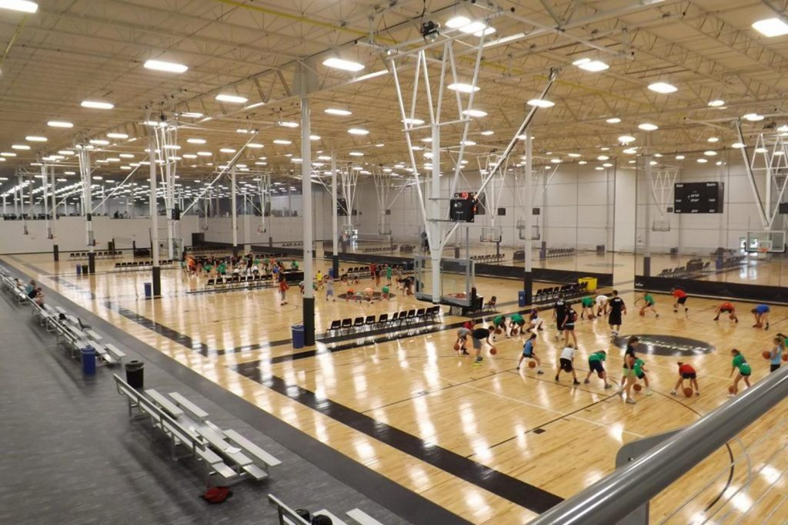
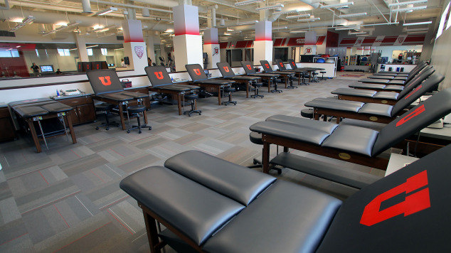
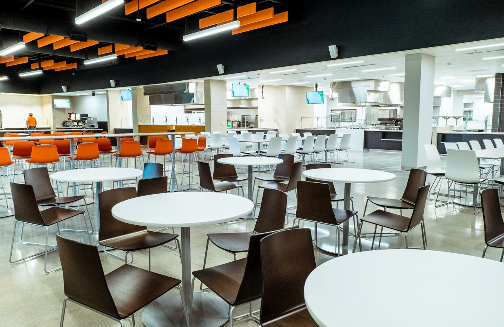

The Courts
We have a complex of basketball courts that are cleaned after each game or training session. These courts are top of the line and hosts national tournaments from time to time.
Training Room
Our training room offers multiple amenities including at least 5 trainers at all times, a hot tub, an ice bath, and massage chairs. Feel free to come in whenever you are sore or just need to relax!
Cafeteria
Our cafeteria only uses the best of ingredients for all of our homemade products. The cafeteria contains a grill, pizzeria, salad bar, sub station, and a dessert section. .